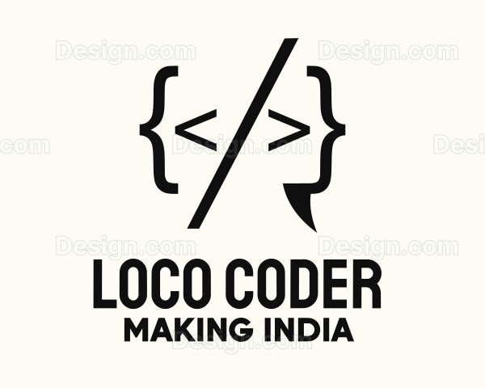

|  |
Loco Coder is dedicated to empowering learners through comprehensive education in technology. We specialize in data structures and algorithms (DSA) and web development, providing hands-on training and resources to help aspiring developers build their skills. Our mission is to make tech education accessible and engaging, fostering a community of knowledgeable coders ready to tackle real-world challenges. Join us and take your coding journey to the next level!